The Mock Turtle sighs, "All these games look like sure losses. I'm down by over 100 in each of them. Maybe if my opponent had an exploitable weakness, I could win with an optimal play."
Note: These games are played using the TWL06 dictionary.
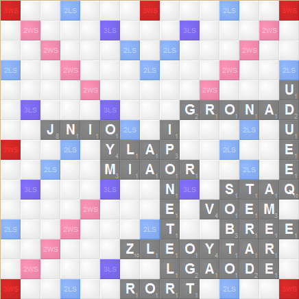
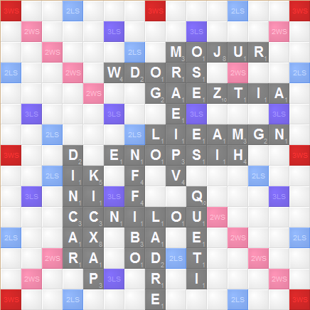
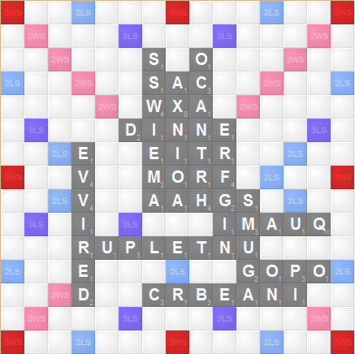
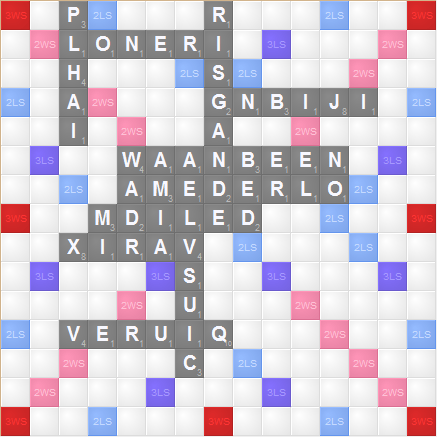
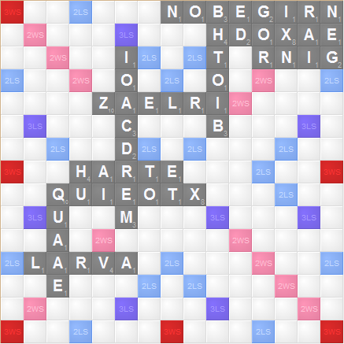
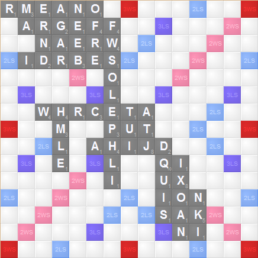
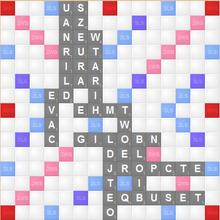
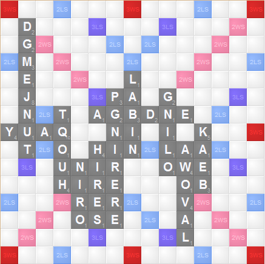
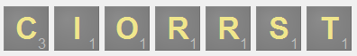
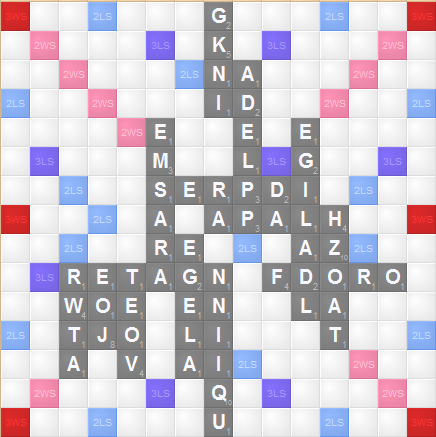
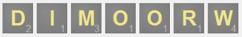
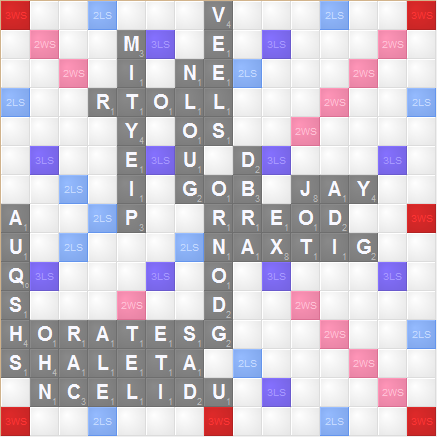